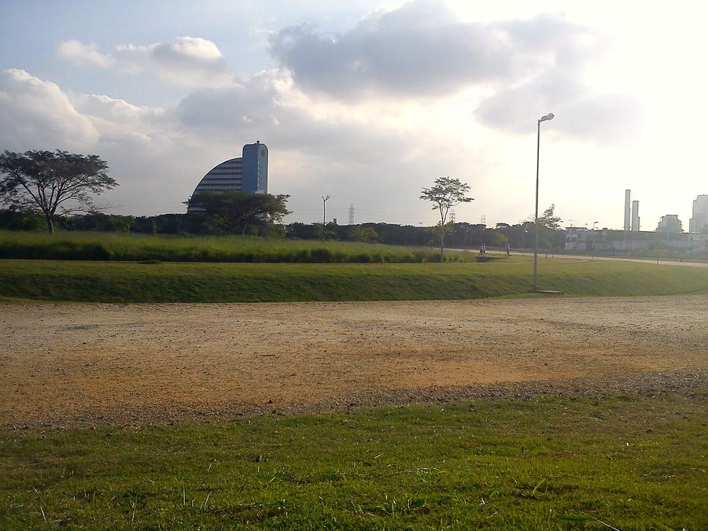
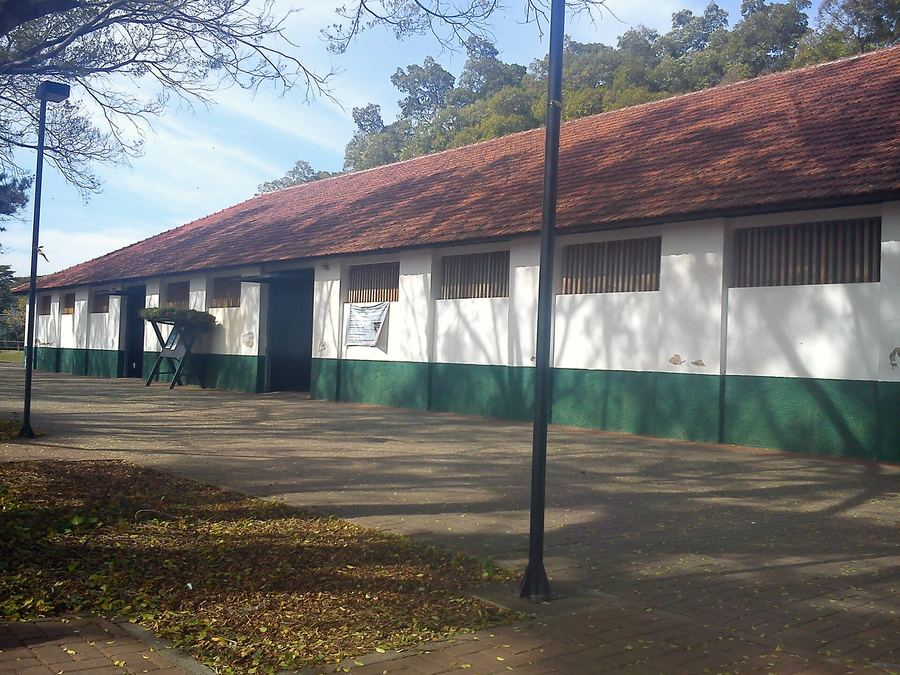
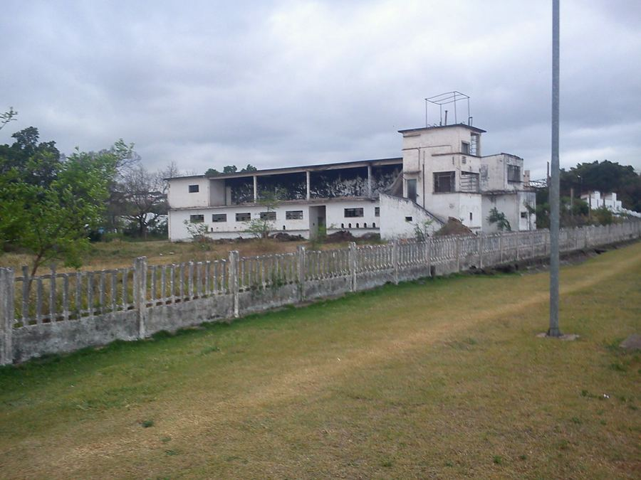
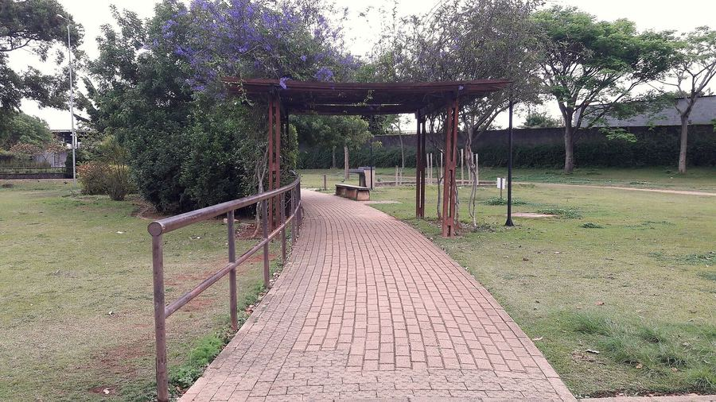
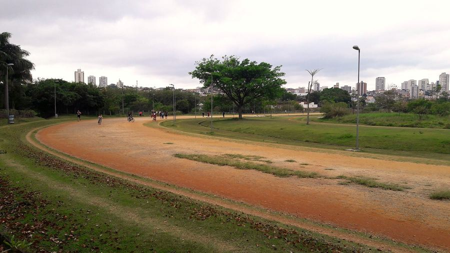
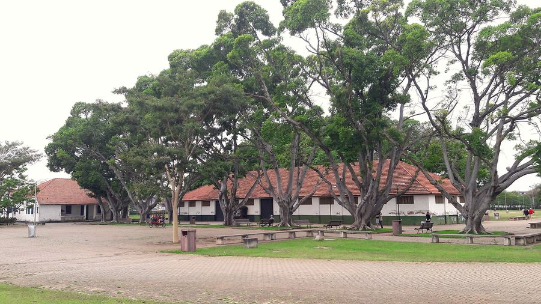
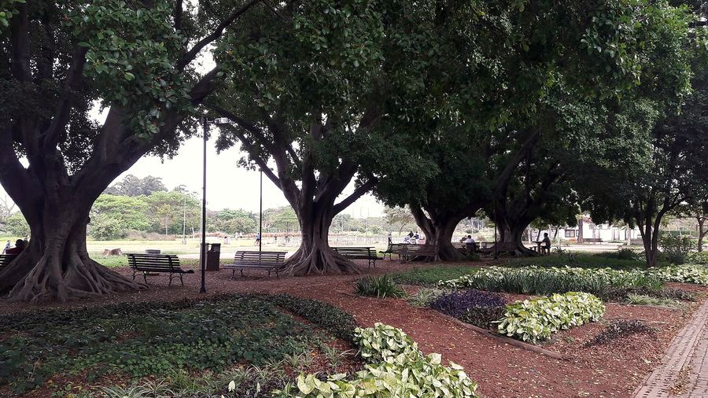

App gratuito da comunidade
O Parque do Trote na palma da mão.
Veja se o parque está aberto, registre sua caminhada, corrida ou pedalada e diga o que o parque precisa. Feito na Vila Guilherme, para quem frequenta o parque.
Grátis, sem propaganda. iPhone em breve.

O que o app faz
Tudo o que você precisa para aproveitar o parque, num lugar só.
-
01
O parque agora
Aberto ou fechado, o horário de hoje e o clima. Os avisos da administração do parque chegam direto no celular.
-
02
Seus treinos
Caminhada, corrida e bike com mapa, distância, tempo e calorias. Corda que conta os pulos sozinha e os treinos da academia ao ar livre.
-
03
A meta da semana
Pelo menos 150 minutos de atividade moderada por semana, o mínimo que a Organização Mundial da Saúde recomenda para adultos. Você sobe de nível, ganha conquistas e veste o seu avatar.
-
04
A voz de quem frequenta
Um mural para sugestões, elogios e problemas do parque, com o botão “Eu também” para apoiar. E a agenda de eventos, com confirmação de presença.
-
05
Ligas, só se você quiser
Disputas semanais entre frequentadores, por pontos de treino. Começam desligadas: você entra se tiver vontade.
O parque
Uma pista de corridas de trote que virou de todo mundo.
- 1944É inaugurada a Sociedade Paulista de Trote, com o único hipódromo do Brasil dedicado às corridas de trote.
- 2002As corridas de trote deixam de acontecer.
- 2006A Prefeitura abre o Parque do Trote no terreno da antiga Sociedade, preservando suas instalações.
- HojeAs antigas baias e edificações são tombadas como patrimônio histórico pelo Conpresp.






- 88,6 mil m²
- de área no Parque do Trote, encostado ao Parque Vila Guilherme
- 67
- espécies de aves conhecidas no parque
- 109
- espécies de plantas registradas, entre elas o jequitibá-rosa e o pau-brasil, ameaçados de extinção
Fontes: página do Parque do Trote e “Parque do Trote completa 16 anos”, da Secretaria Municipal do Verde e do Meio Ambiente; notícia da Prefeitura de 2006.
Seus dados, suas regras
Pensado para respeitar a LGPD e o ECA Digital.
- Sem propaganda. Não vendemos dados nem montamos perfil de consumo.
- Peso e idade só com o seu aval. Dado de saúde pede consentimento separado.
- Ranking só se quiser. Seu perfil público mostra só o nome de usuário e o avatar.
- Modo adolescente. De 13 a 17 anos, o app começa com as opções mais protetoras: ligas desligadas e, se a pessoa entrar, só com outros adolescentes.
- Seus dados na mão. Baixe uma cópia ou apague a conta pelo próprio app, quando quiser.
- Conta protegida. Trava do app com a digital e verificação em duas etapas.
Baixe e venha para a pista.
É de graça?
Sim. Não tem propaganda nem compra dentro do app: a lojinha do avatar usa só as gemas que você ganha treinando.
Como instalo a versão de teste?
Toque em “Baixar a versão de teste” no celular Android. Quando o download terminar, abra o arquivo. O Android vai pedir para permitir a instalação “desta fonte”: permita só para o navegador e instale. Quando o app chegar na Google Play, é só instalar por lá.
Tem para iPhone?
Ainda não. Começamos pelo Android e o iPhone vem depois.
É um app da Prefeitura?
Não. O MeuTrote é um projeto de extensão universitária, independente. Não é um canal oficial da Prefeitura de São Paulo. Para pedidos oficiais, use o SP156.